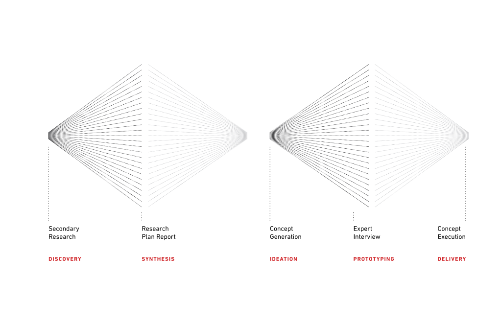
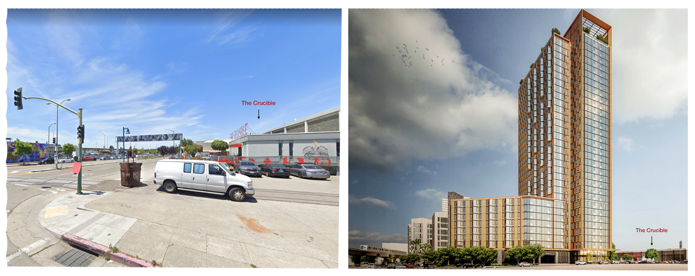
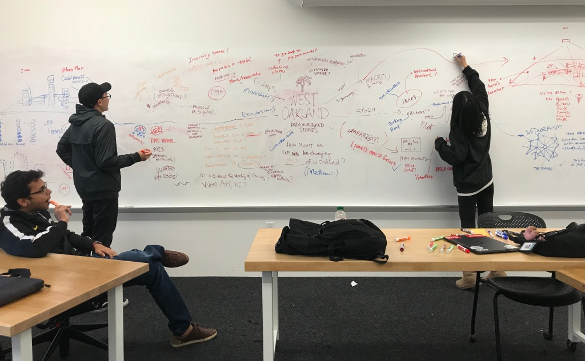
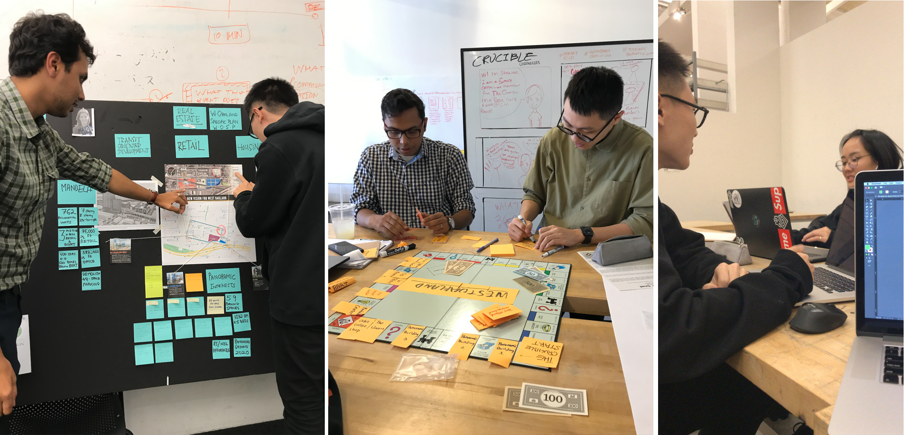
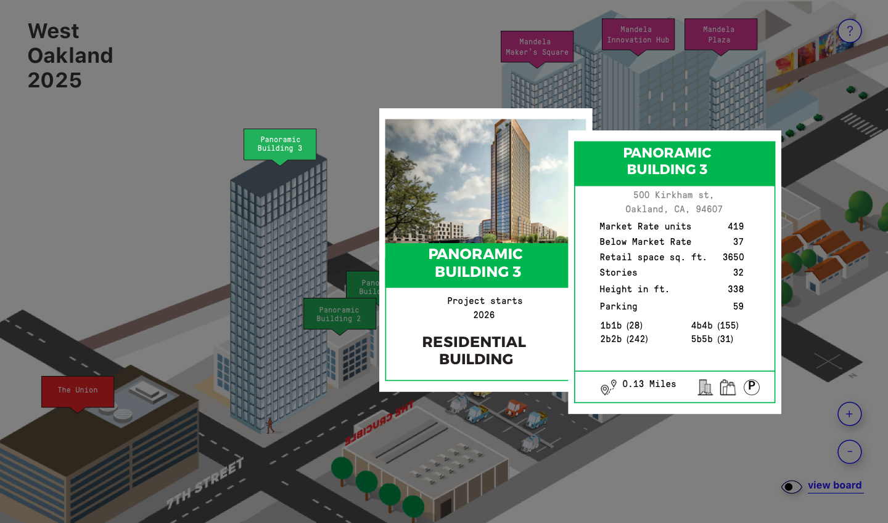

Team: Wilson Wu, Mahesh Kantheti, GinGin Xie
Duration: 4 Months
Target Group: The faculty, students and Future focus committee at the Crucible; and Extended community of West Oakland
When we took on this project, West Oakland was going through significant urban urban development — causing an impact to the existing population. An Industrial Art school at the heart of it was trying to make sense of what this means for who they will be in the the next five years. The Crucible is a nonprofit organization and art school dedicated to making the fine and industrial arts accessible for all ages, backgrounds, and abilities. Their work is centred in Oakland and the East Bay, where they provide high-quality classes and workshops to over 8,000 people each year. They collaborated with us to visualize the impact and nature of the upcoming changes in their neighbourhood, estimating demographic changes and building a story from data.
We started with some desk research to understand the scope of changes that were underway. The proposed developments promised new opportunities but also threatened the neighborhood's identity as a center for the arts and affordable living. One project alone, the Panoramic, was expected to bring over 2,000 new residents, posing a challenge to The Crucible's mission of serving an underserved community now at risk of displacement.
Opportunity Statement: How might we create a data-informed narrative about the changing face of West Oakland, in order to support Crucible’s strategic business decisions going forward?
We considered different mediums to tell this data story — from podcasts, to drone imagery and lego blocks. After some deliberation, we presented three core ideas to The Crucible: a layered map, a storyboard, and a playful game. The client was most drawn to the idea of using a game like Monopoly as a way to make complex, high-stakes information more approachable and interactive.
 We developed a prototype based on Monopoly, a fitting metaphor for the real-estate facelift that West Oakland was going through. We presented it to the client, and our class, and based on the feedback, we added an isometric illustration of the future 7th street at the center of the board and redesigned our "impact cards" to visually emphasize the hard-hitting consequences of gentrification.

To expand the reach of our prototype, we also designed a digital version of the game. Below is a video of the interaction with the digital prototype.
